✅ ЧЕК-ЛИСТ (в России)
📱 Установить eSIM
Сделай до вылета, пока есть российский интернет. Ищи тариф «Turkey, 7 days» (~$8–12). Интернет появится сразу после посадки в Стамбуле.
💡 При покупке выбирай тарифы с безлимитным интернетом (Unlimited Data) — в Стамбуле расход трафика высокий из-за карт, фото и переводов.
🗺️ Офлайн карты
Google Maps → поиск «İstanbul» → кнопка «Скачать». Сохраняет всю карту города — работает без интернета даже в метро.
Размер скачки ~200–300 МБ. Подключись к WiFi перед скачиванием.
Открыть Google Maps📲 Приложения — установи заранее
🃏 Istanbulkart — транспортная карта
Купи в аэропорту (автомат или киоск, ~150 ₺ + пополнение). Работает в метро, трамвае, автобусе и пароме. Без карты за наличные — дороже в 1.5–2 раза.
ДЕНЬ 1 — 9 АПРЕЛЯ
СРЕДА · ПРИЛЁТ⚡ Срочно по прилёту:
Обменяй немного евро (50–100€) на лиры прямо в аэропорту — для автобуса и покупки Istanbulkart. Курс в аэропорту хуже, чем в городе, но для первого дня хватит.
🚌 Вариант 1: Havaist (автобус)
Маршрут HAVIST-20 идёт до Султанахмет / Эминёню — ближайшая точка к отелю (~30 мин пешком до Grand Marcello). Самый бюджетный и комфортный вариант.
📍 В аэропорту: уровень -2, знаки «Havaist», стойка с кассой, табло «Sultanahmet / Eminonu»
⏱️ Путь: ~80–100 минут. Работает 24/7 (каждые 45–60 мин).
💰 Цена: ~275 лир (~6€).
💳 Оплата: Можно оплатить бесконтактной банковской картой или Istanbulkart. Наличными — только в кассе на платформе (уровень -2), где стоят автобусы. Там продают и Istanbulkart.
🚇 Вариант 2: Метро M11 → M2 (дешевле)
Самый дешёвый маршрут — метро с одной пересадкой. Нужна карта Istanbulkart (купить у выхода из аэропорта или в терминале).
Аэропорт → Gayrettepe — ~38 мин. Садись на линию M11 прямо в терминале аэропорта (уровень -3, знаки «Metro»). Конечная пересадочная станция — Gayrettepe.
Gayrettepe → Vezneciler — ~25 мин. На Gayrettepe переходи на красную линию M2, едь в сторону Yenikapı. Выходи на Vezneciler — это ближайшая станция к отелю.
Vezneciler → Grand Marcello — ~12–15 мин пешком. Из метро выйди на улицу Ordu Caddesi, иди на восток (~800 м) до отеля.
После заселения (~14:30+)
Меняем оставшиеся евро в обменнике на улице Орду (Ordu Caddesi) рядом с отелем. Проверить курс: EUR → TRY в Google
🚡 Как добраться до Галатапорт
🚊 Трамвай T1 — от остановки «Beyazıt-Kapalıçarşı» или «Sultanahmet» → «Karaköy» (5–6 остановок, ~18 мин, Istanbulkart). Выходишь у Karaköy и идёшь вдоль набережной ~5 мин.
🚕 BiTaksi — ~100–150 ₺, ~15 мин от отеля.
🚶 Пешком — ~25–30 мин через базары и набережную.
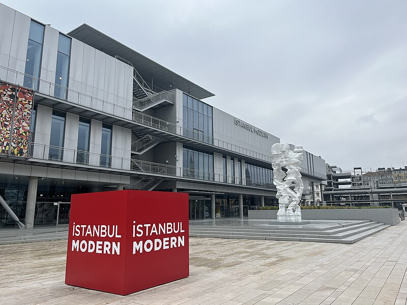
1. 🎨 Музей İstanbul Modern
Бесплатно снаружиСовременное искусство в стеклянном здании прямо на берегу Босфора в Галатапорт. Вт–Вс 10:00–18:00 (Пт до 20:00), Пн — выходной. Стоимость ~€8. Если не заходить — просто прогулка по набережной уже стоит того: виды на Босфор, паромы, Галатская башня вдали.
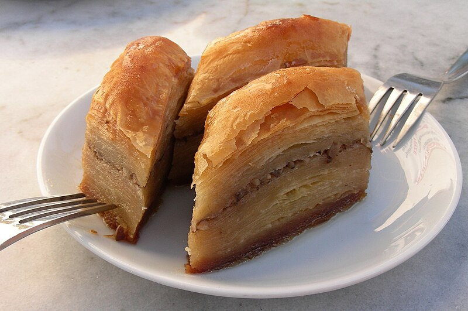
2. 🍭 Hafız Mustafa 1864 (Galataport)
Легендарная турецкая кондитерская, основанная в 1864 году. Обязательно попробуй баклаву (сладкое тесто с орехами и мёдом), кюнефе (горячий сырный десерт с мёдом) и лукум в подарок домой. Здесь же есть кофе и чай.
Google Maps3. 🌸 Atelier Rebul (Galataport)
Люксовый турецкий парфюм, основанный в 1895 году. Аромат «Istanbul Cologne» — цветочно-пряный, стал культовым сувениром из Стамбула. Здесь же можно пройти мастер-класс по созданию своего аромата (по записи, ~€50).
Google Maps4. ☕ Kronotrop Karaköy
Фотогеничная спешелти-кофейня в Каракёе с живыми лозами на стенах. Одна из лучших кофеен Стамбула — обжаривают зёрна сами. Отличный фильтр или флэт уайт. Атмосфера богемного квартала.
Google Maps5. 🐟 Балык Дюрюм — Mehmet Usta (Эминёню)
Культовая точка у причала Эминёню — скумбрия на гриле в лаваше с помидорами и луком (~280–350 лир). Очередь — это нормально, на неё уходит 5 минут. Запивай айраном или турецким чаем из соседней чайной.
Google Maps — Балык ДюрюмДЕНЬ 2 — 10 АПРЕЛЯ
ЧЕТВЕРГ · БАЗАРЫПеший маршрут от отеля
Всё в пешей доступности от Grand Marcello (15–20 мин до каждой точки). Стартуй пораньше — к Айя-Софии приходи до 9:30!
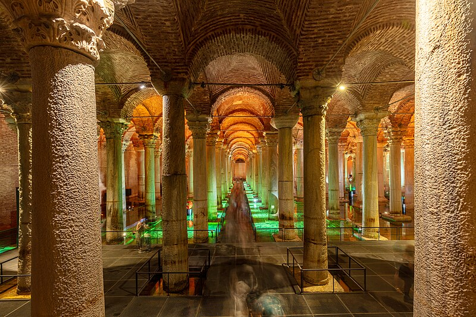
🏛️ Цистерна Базилика (Yerebatan)
Подземное водохранилище VI века — самое большое в Константинополе. Впечатляющие колонные залы с подсветкой, затопленные полом. Главный аттракцион — головы Медузы Горгоны, перевёрнутые и стоящие на боку. Билет ~€10–15. Лучше купить онлайн — очередь меньше.
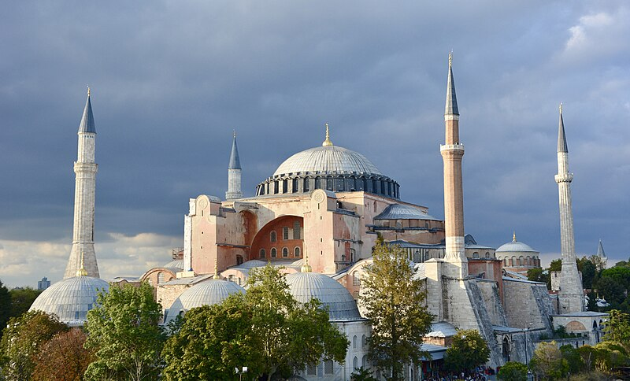
🕌 Айя-София (Hagia Sophia)
Одна из величайших построек человечества — построена в 537 году, была главным христианским собором, затем мечетью Османской империи, музеем и снова мечетью с 2020 года. Купол диаметром 31 м кажется парящим в воздухе. Вход бесплатный. Надевай закрытую одежду (женщинам — платок на голову). Приходи до 10:00 чтобы избежать толпы.
Google Maps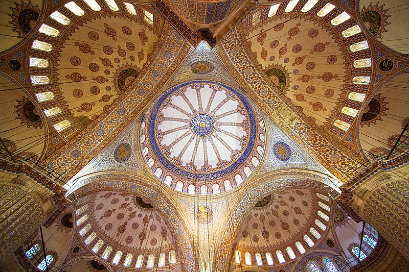
🕌 Голубая Мечеть (Sultan Ahmet Camii)
Напротив Айя-Софии. Шесть минаретов — редкость для мечети. Внутри — тысячи синих изникских изразцов (отсюда название). Вход бесплатный, но во время намаза закрыта (5 раз в день по ~45 мин). Проверь расписание намазов.
Google Maps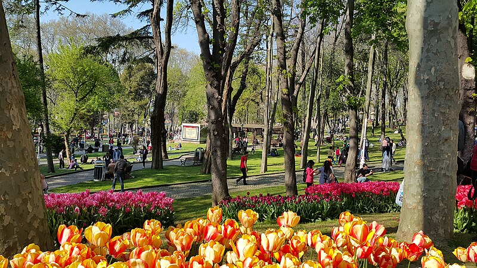
🌳 Парк Гюльхане (Gülhane)
Бывшие императорские сады дворца Топкапы. В апреле здесь цветут тюльпаны и сакура — один из красивейших парков Стамбула весной. Бесплатный вход, коты повсюду (местная традиция — стамбульских котов обожают). С холма открывается вид на Золотой Рог и Босфор.
Google Maps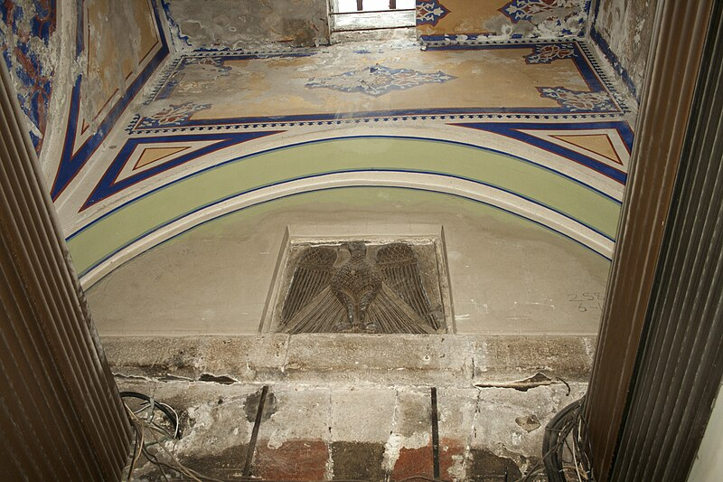
🛍️ Гранд Базар (Kapalı Çarşı)
Один из крупнейших крытых рынков мира — около 4000 лавок в лабиринте крытых улиц. Ювелирные украшения, специи, кожа, ковры, лампы Тиффани, текстиль. Пн–Сб 8:30–19:00, Воскресенье — закрыт. Торгуйся — первая цена завышена в 2–3 раза. Начинай с предложения 40% от названной.
Google MapsДЕНЬ 3 — 11 АПРЕЛЯ
ПЯТНИЦА · БЕЙОГЛУ🚌 Как добраться: BiTaksi до Таксима (~100–150 лир, 15–20 мин) или метро М2 (Aksaray → Taksim, ~25 мин, Istanbulkart).
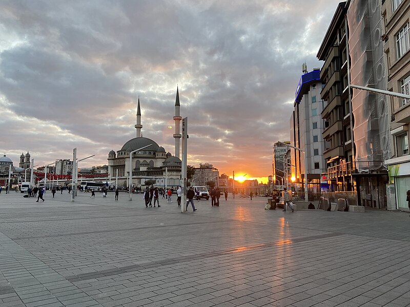
1. 🏛️ Площадь Таксим
Сердце современного Стамбула. Монумент Республики, фонтан, постоянное движение людей. Начало пешеходной улицы Истикляль — 1.5 км магазинов, кафе и исторических зданий. Прокатись на историческом трамвае по Истикляль (красный, ходит каждые 5 мин).
Google Maps2. 🏛️ İBB Casa Botter
Особняк в стиле арт-нуво, построенный в 1901 году для голландского торговца. Один из красивейших фасадов Истикляль. Бесплатный вход (Вт–Вс 10:00–19:00). С балкона второго этажа — лучший вид на всю улицу Истикляль.
Google Maps3. ☕ Кофе-пауза
Espressolab Taksim Tünel — лучшая местная кофейная сеть, натуральный обжар. Или Starbucks Tünel — в старинном особняке с открытым двориком (необычный формат, стоит зайти ради интерьера).
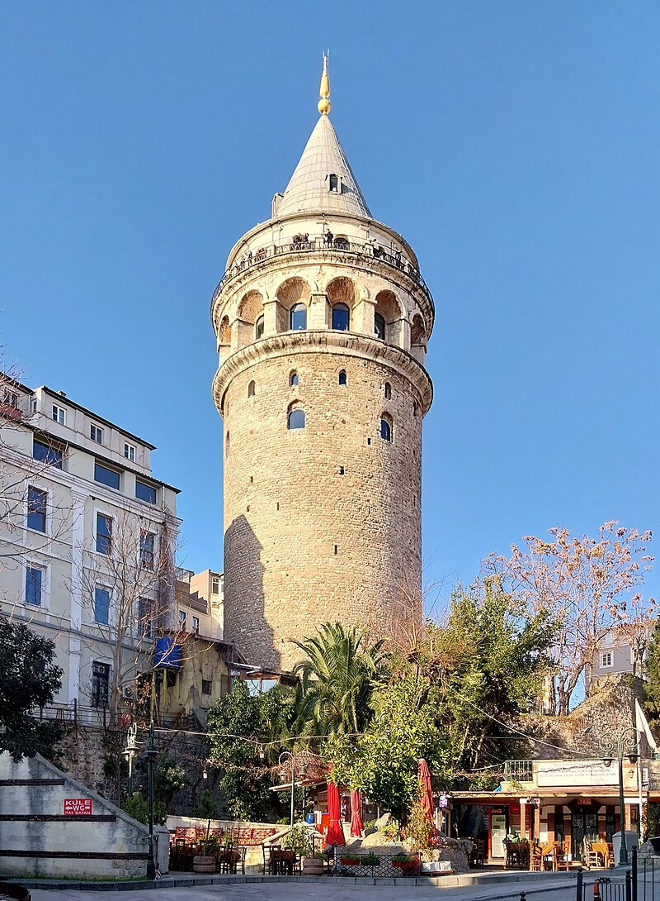
4. 🗼 Галатская башня
Генуэзская башня XIV века, 67 метров высотой. Панорамный вид 360° на оба берега Босфора, Золотой Рог и крыши Стамбула — особенно красиво на закате (~18:30 в апреле). Совет: купи билет онлайн заранее, живая очередь может быть долгой. Цена ~€14.
5. 🪜 Лестница Камондо
Изящная мраморная лестница XIX века с плавными изгибами — построена банкиром Камондо для подъёма в банковский квартал. Теперь это одна из самых фотографируемых точек Стамбула. Вход свободный, всегда открыто.
Google Maps6. 📚 SALT Galata
Бывшее здание Оттоманского Имперского банка (1892 г.), теперь арт-центр. Внутри — бесплатная библиотека со старинными архивами, галерея современного искусства и приятное кафе во внутреннем дворике. Вт–Сб 12:00–20:00.
Google Maps7. 🍽️ Ужин: Salon GALATA
Прямо рядом с SALT Galata. Уютный ресторан с турецкой кухней на европейский манер. Меню: кебабы, морепродукты, мезе (закуски). Средний чек ~400–600 лир. Рекомендуется бронировать столик заранее в пятницу вечером.
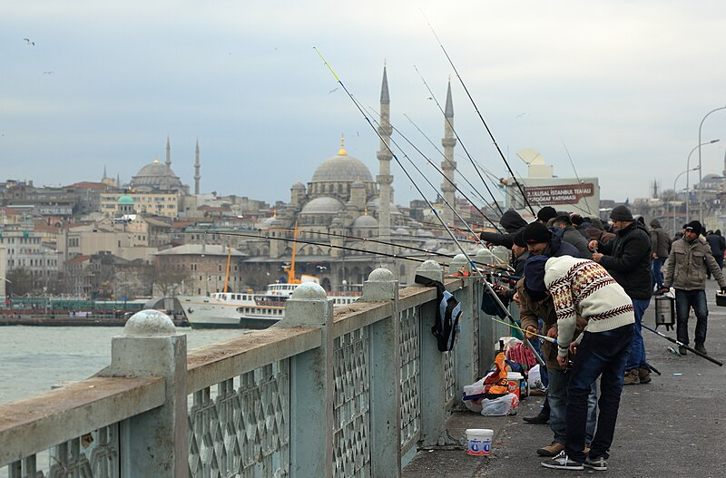
🌊 Вечерняя прогулка: Galata Köprüsü
Галатский мост через Золотой Рог — знаменит сотнями рыбаков, стоящих бок о бок. На нижнем ярусе — ряд рыбных ресторанов прямо над водой. Обязательно прогуляйся после заката — огни города, паромы и закатное небо.
Google MapsДЕНЬ 4 — 12 АПРЕЛЯ
СУББОТА · ОТЪЕЗД⚠️ ВЫЕЗД ИЗ ОТЕЛЯ: 15:00 — 15:30
🕐 Свободное время (12:00–15:00)
Чемодан оставь на хранение в отеле (обычно хранят бесплатно до вечера). Можно погулять по Гранд Базару или зайти в ближайшую кофейню.
✅ Опция 1: Такси Uber или BiTaksi (рекомендуется)
~600–900 лир (~€13–19). В пути 45–60 мин. В субботу трафик плотный — выезжай с запасом. Скачай Uber или BiTaksi из App Store / Google Play.
Опция 2: Havaist (бюджетно)
От остановки у Султанахмета. ~275 лир. ~80–100 минут. Риск — опоздание при непредвиденных задержках.
💱 Где менять валюту?
Улица Ordu Caddesi
Рядом с Grand Marcello. Несколько обменников — сравни курс в двух соседних.
Внутри Гранд Базара
Удобно если ты там шопишься. Курс чуть хуже, чем в Тахтакале, но приемлемый.
⚠️ Советы: Всегда спрашивай «Without commission?» — без скрытых комиссий. Меняй сразу крупную сумму — курс будет выгоднее. Не меняй в аэропорту больше минимума. Проверяй курс перед обменом:
EUR → TRY сейчас в Google🍽️ Что обязательно попробовать
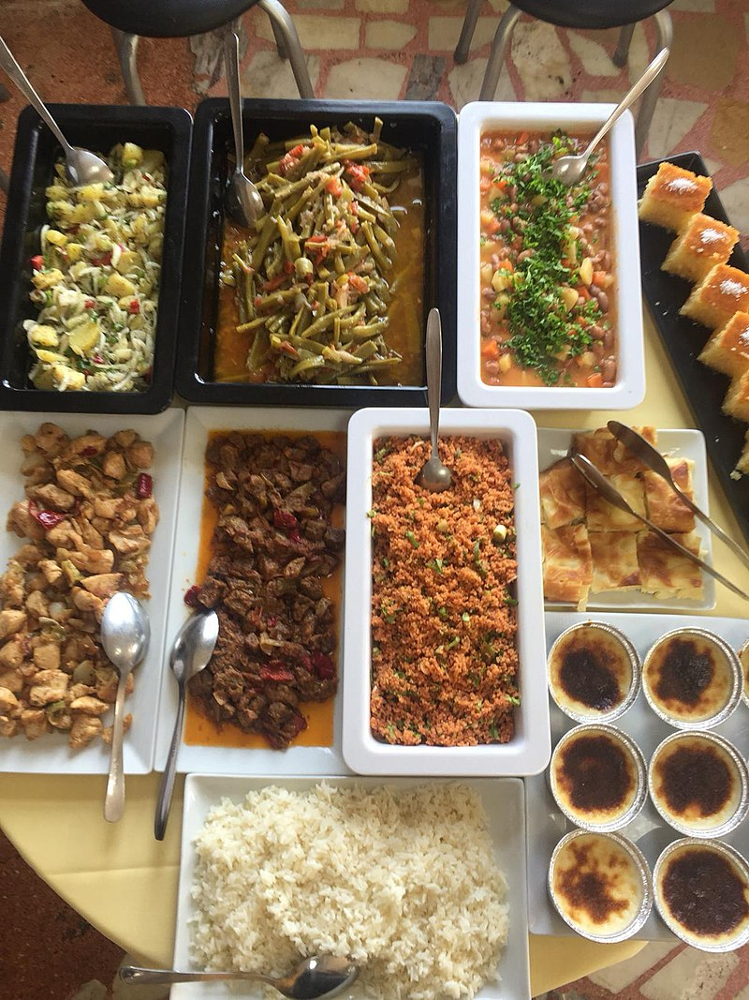
Балык Дюрюм
Жареная скумбрия в лаваше — главный уличный фастфуд Стамбула. ~280–350 ₺. Лучший у Эминёню.
Кебаб Adana / Döner
Острый рубленый кебаб на углях или дёнер в лепёшке. Ищи места с вертелом у входа.
Турецкий завтрак (Kahvaltı)
Разнообразие сыров, мёда, оливок, яиц, варенья и хлеба — на завтрак в отеле это и есть. Попробуй и в кафе на улице.
Турецкий чай (Çay) и кофе
Чай — главный напиток Турции, пьют везде и в любое время. Турецкий кофе — густой, без молока, с гущей на дне.
Баклава и кюнефе
Баклава — слоёное тесто с орехами и мёдом. Кюнефе — горячий десерт из тянутого теста с сыром, полит сиропом. Лучший в Hafız Mustafa.
Айран
Солёный йогуртовый напиток — освежает и хорошо сочетается с любым блюдом. ~30–50 ₺ везде.
💡 Практические советы
🌡️ Погода в апреле
+14–20°C днём, +8–10°C ночью. Возможны дожди. Возьми лёгкую куртку и небольшой зонт. Весна — одно из лучших времён для Стамбула.
🕌 В мечетях
Нужны закрытые плечи и колени. Обувь снимают. Женщинам — платок на голову (обычно дают у входа). В Айя-Софии следуй указателям — для туристов отдельный вход.
💸 Наличные vs карта
В большинстве ресторанов и магазинов принимают карты (Visa, MC). На рынках и у уличных торговцев — только наличные. Имей при себе ~2000–3000 ₺ наличными.
🚡 Транспорт
Istanbulkart работает в метро, трамвае T1 (Sultanahmet → Karaköy), автобусах и паромах. Трамвай T1 — самая удобная линия для туристов. Паром через Босфор стоит ~20 ₺.
📡 Интернет
С eSIM интернет работает с первой минуты по прилёту. WiFi в отеле, кафе и торговых центрах — обычно хороший. Включи роуминг данных только если не успел купить eSIM.
🛡️ Безопасность
Стамбул — безопасный город для туристов. Основные риски: карманники у Гранд Базара и в метро, навязчивые торговцы (просто твёрдо говори «Hayır, teşekkür ederim» — «Нет, спасибо»). На такси используй только официальные BiTaksi.